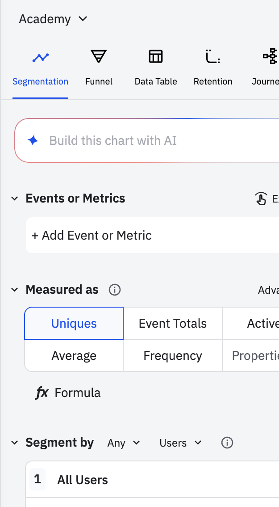

Dimension 1
Event (what)
The action you're tracking
Filters narrow which occurrences count. If you filter Play Song or Video where Genre = Pop, only pop song plays are included. The user count only reflects users who played pop songs. Other plays don't count.
When you'd use this
- Track a specific feature action, like "Export Report" or "Invite Sent"
- Filter to one variation of an event, like purchases over $100 or sessions longer than 5 minutes
- Narrow to a specific platform, like mobile-only plays or web-only logins
Dimension 2
Metric (how counted)
How you're counting occurrences
How you count determines what your numbers mean. Uniques counts each person once. Event Totals counts every occurrence — including multiple actions by the same user. A chart showing 12,000 Event Totals does not mean 12,000 users.
When you'd use this
- Uniques — reporting adoption: "How many users tried this feature?"
- Event Totals — reporting volume: "How many times did this happen?"
- Average — reporting depth: "How many songs does a user play per day on average?"
Dimension 3
Segment (who)
Which users you're including
Narrows which users are included. If you add Country = US in the Segment By module, only US users appear in your chart. The denominator changes. Non-US users are excluded entirely.
When you'd use this
- Restrict the chart to paid users only, or free trial users only
- Compare two specific audiences side by side by adding a second segment
- Scope analysis to users who completed onboarding before measuring engagement
Dimension 4
Group-by (how sliced)
How you're breaking results down
Splits results into buckets. If you group by Country, every user is still in the chart — just sorted into their country bucket. No one is excluded. The totals still add up.
When you'd use this
- Compare feature adoption across plan types — free trial vs. paid
- See which device type (mobile, desktop, tablet) drives the most engagement
- Break down an event by region or country for a geographic view